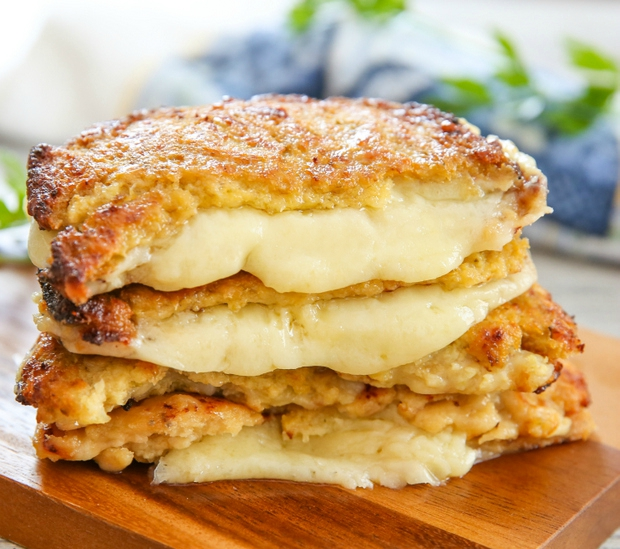
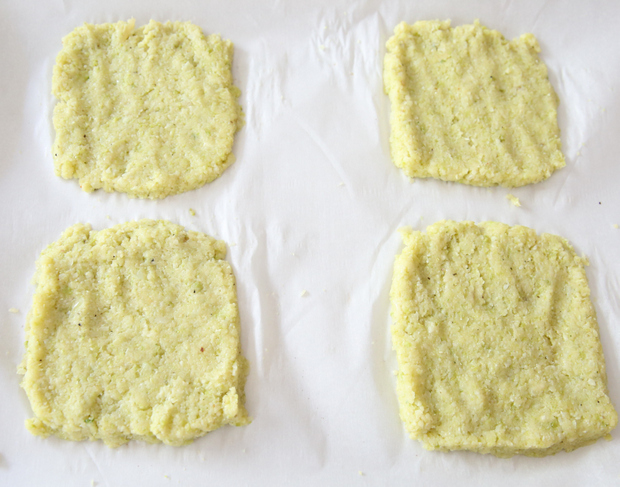
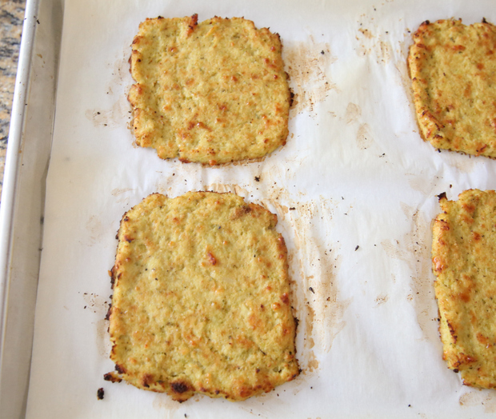

Back
Cauliflower Grilled Cheese
Ingredients
- 1 head of cauliflower, cut into small florets and stem removed
- 1 large egg
- 1/2 cup shredded Parmesan cheese
- 1 tsp Italian herb seasoning
- 2 thick slices of white cheddar cheese



Instructions
- Preheat oven to 450F. Place cauliflower into food processor and pulse until crumbs about half the size of a grain of rice.
- Place cauliflower into large microwave safe bowl and microwave for 2 minutes. Your cauliflower should be soft and tender (and hot!). (If you don't want to use the microwave to dry out the cauliflower and prefer to steam and wring with a cloth to dry, check out my wringing instructions here.)
- Stir cauliflower to mix up the bottom and top cauliflower. Place back into the microwave and cook for another 3 minutes. Remove and stir again so that all the cauliflower cooks evenly. Place back into microwave and cook for 5 minutes. At this point, you should see the cauliflower is starting to become more dry. Microwave for another 5 minutes. Cauliflower should still be slightly moist to the touch, but should look dry and clumped up (like photo above; similar to as if someone had chewed it up and spit it back out.) If you've made cauliflower pizza or breadsticks with the cloth wringing dry method, it should look the same.
- Allow cauliflower to cool for a few minutes. Then add in egg, parmesan and seasoning. Stir to combine until smooth paste forms. Divide dough into 4 equal parts. Place onto large baking sheet lined with parchment paper or silpat mat. Using your knuckles and fingers, shape into square bread slices about 1/2 inch thick. Bake cauliflower bread for about 15-18 minutes or until golden brown. Remove from oven and let cool a few minutes.
- Using a good spatula, carefully slide cauliflower bread off of parchment paper. Now you are ready to assemble your sandwiches. Normally I make grilled cheese sandwiches on a pan, but since the cauliflower crust is more delicate, I didn't want to risk it breaking with too many flips on the stove. Instead, make 2 cauliflower sandwiches by adding a slice of cheese in between each pair of bread slices. Place sandwiches into toaster oven and broil for several minutes (5-10) until cheese is completely melted and bread is toasty. If you don't own a toaster oven, you can also do this in the oven.
Source